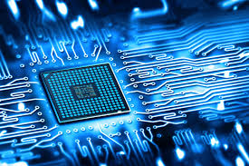
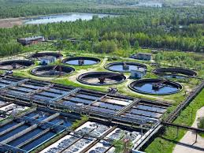

Mechanical Engineering
Mechanical engineering is the foundational branch of engineering that applies physics, mathematics, and materials science to design, analyze, and manufacture physical machines, mechanisms, and thermal systems. It is the backbone of industries driving modern movement, energy, and infrastructure.
Electrical Engineering
Electrical engineering is a core branch of engineering focused on the study, design, and application of systems that utilize electricity, electronics, and electromagnetism. It drives modern society by powering everything from microchips in smartphones to renewable energy grids and electric vehicles

Computer Science Engineering
Computer Science Engineering (CSE) is a dynamic discipline that integrates principles of computer science and electrical engineering to design, develop, and optimize both software and hardware systems. It drives modern technology, powering everything from AI and cloud computing to cybersecurity and robotics.

Civil Engineering
Civil engineering is a core professional discipline that focuses on the design, construction, and maintenance of the physical and naturally built environment. It encompasses essential public works and infrastructure, including roads, bridges, dams, airports, water supply networks, and the structural components of buildings

Electronics Engineering
Electronics and Telecommunication engineering is a dynamic field bridging electrical hardware and digital communication. It focuses on designing, developing, and testing systems like microprocessors, IoT networks, wireless communication, and satellite systems. IT careers.

Environmental Engineering
Environmental engineering applies scientific and engineering principles to protect human health, improve ecosystem quality, and promote sustainable development. Professionals in this field design water supply and wastewater treatment systems, manage solid and hazardous waste.